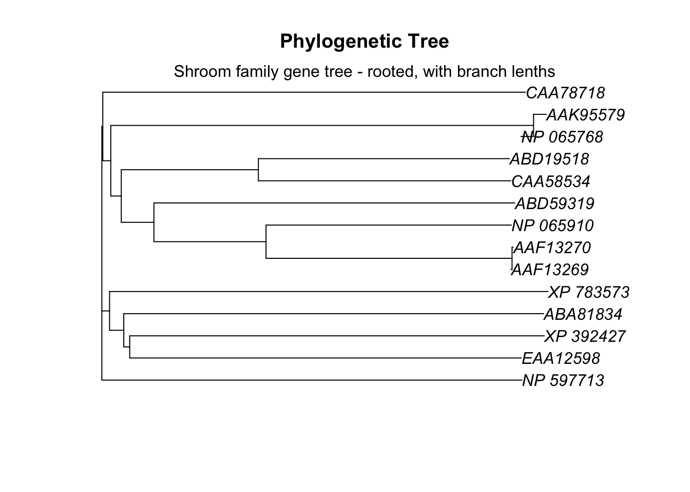
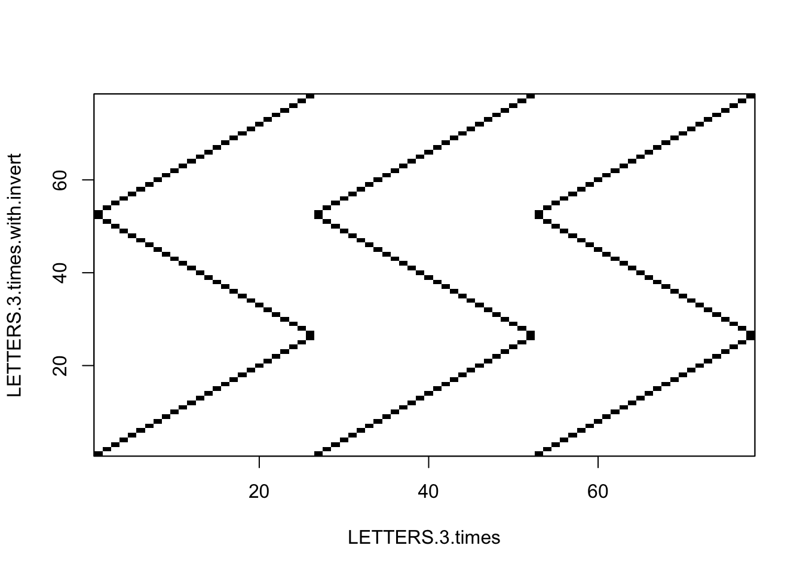
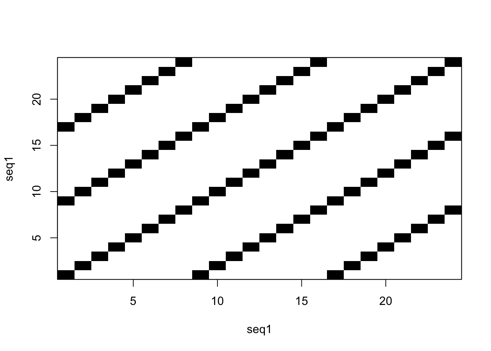
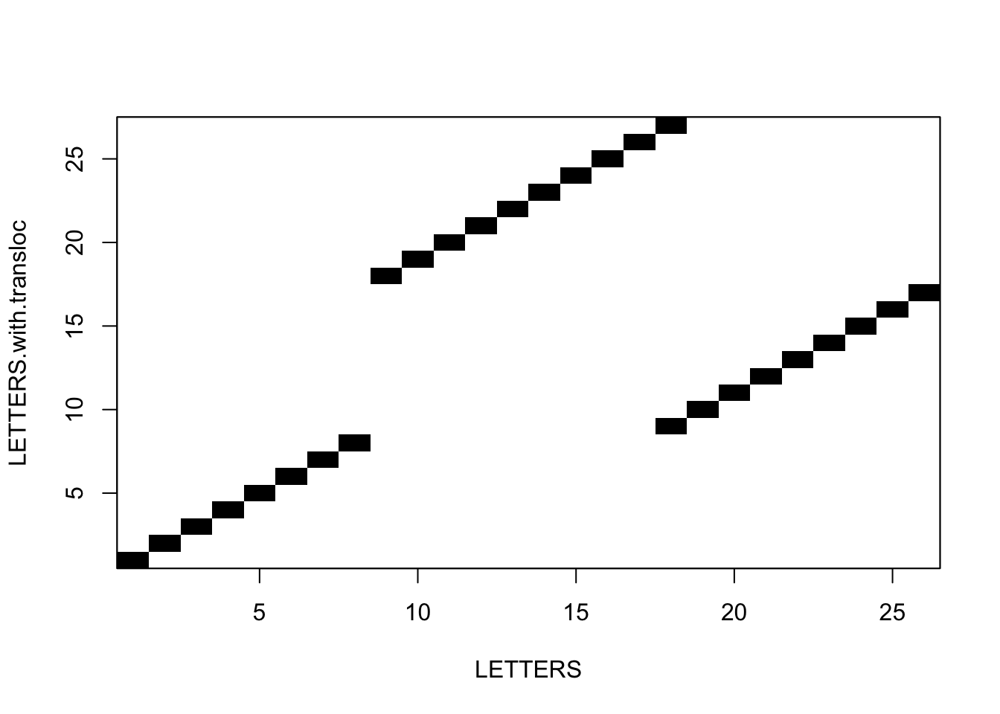

Chapter 16 Sequence dotplots in R
By: Avril Coghlan.
Adapted, edited and expanded: Nathan Brouwer under the Creative Commons 3.0 Attribution License (CC BY 3.0).
NOTE: I’ve added some new material that is rather terse and lacks explication.
16.1 Preliminaries
library(compbio4all)16.1.1 Download sequences
As we did in the previous lesson on dotplots, we’ll look at two sequences.
# sequence 1: Q9CD83
leprae_fasta <- rentrez::entrez_fetch(db = "protein",
id = "Q9CD83",
rettype = "fasta")
# sequence 2: OIN17619.1
ulcerans_fasta <- rentrez::entrez_fetch(db = "protein",
id = "OIN17619.1",
rettype = "fasta")
leprae_vector <- fasta_cleaner(leprae_fasta)
ulcerans_vector <- fasta_cleaner(ulcerans_fasta)16.2 Visualzing two identical sequences
To help build our intuition about dotplots we’ll first look at some artificial examples. First, we’ll see what happens when we make a dotplot comparing the alphabet versus itself. The build-in LETTERS object in R contains the alphabet from A to Z. This is a sequence with no repeats.
seqinr::dotPlot(LETTERS,
LETTERS)
What we get is a perfect diagonal line.
16.3 Visualizing repeats
Now lets’ make a sequence where the alphabet gets repeats twice
LETTERS.2.times <- c(LETTERS,LETTERS)
seqinr::dotPlot(LETTERS.2.times,
LETTERS.2.times)
Note the diagonal lines.
Now 3 repeats
LETTERS.3.times <- c(LETTERS,LETTERS,LETTERS)
seqinr::dotPlot(LETTERS.3.times,
LETTERS.3.times)
Here’s another example of repeats.
Create sequence with repeats:
seq.repeat <- c("A","C","D","E","F","G","H","I")
seq1 <- rep(seq.repeat,3)Make the dotplot:
seqinr::dotPlot(seq1,
seq1)
16.4 Inversions
See if you can figure out what’s going on here.
LETTERS.3.times.with.invert <- c(LETTERS,rev(LETTERS),LETTERS)
seqinr::dotPlot(LETTERS.3.times,
LETTERS.3.times.with.invert)
16.5 Translocations
See if you can figure out what’s going on here.
seg1 <- LETTERS[1:8]
seg2 <- LETTERS[9:18]
seg3 <- LETTERS[18:26]
LETTERS.with.transloc <- c(seg1,seg3,seg2)
seqinr::dotPlot(LETTERS,
LETTERS.with.transloc)
16.6 Random sequence
letters.rand1 <- sample(x = LETTERS, size = 26, replace = F)
letters.rand2 <- sample(x = LETTERS, size = 26, replace = F)
seqinr::dotPlot(letters.rand1,
letters.rand2)
16.7 Comparing two real sequences using a dotplot
As a first step in comparing two protein, RNA or DNA sequences, it is a good idea to make a dotplot. A dotplot is a graphical method that allows the comparison of two protein or DNA sequences and identify regions of close similarity between them. A dotplot is essentially a two-dimensional matrix (like a grid), which has the sequences of the proteins being compared along the vertical and horizontal axes.
In order to make a simple dotplot to represent of the similarity between two sequences, individual cells in the matrix can be shaded black if residues are identical, so that matching sequence segments appear as runs of diagonal lines across the matrix. Identical proteins will have a line exactly on the main diagonal of the dotplot, that spans across the whole matrix.
For proteins that are not identical, but share regions of similarity, the dotplot will have shorter lines that may be on the main diagonal, or off the main diagonal of the matrix. In essence, a dotplot will reveal if there are any regions that are clearly very similar in two protein (or DNA) sequences.
We can create a dotplot for two sequences using the dotPlot() function in the seqinr package.
First, let’s look at a dotplot created using only a single sequence. You’d never do this in practice, but it will give you a sense of what dotplots are doing.
seqinr::dotPlot(leprae_vector,
leprae_vector)
These two sequences are identical, so we have a very distinct diagonal line. But there’s also other
Now we’ll make a real dotplot of the chorismate lyase proteins from two closely related species, Mycobacterium leprae and Mycobacterium ulcerans.
seqinr::dotPlot(leprae_vector,
ulcerans_vector)
In the dotplot above, the M. leprae sequence is plotted along the x-axis (horizontal axis), and the M. ulcerans sequence is plotted along the y-axis (vertical axis). The dotplot displays a dot at points where there is an identical amino acid in the two sequences.
For example, if amino acid 53 in the M. leprae sequence is the same amino acid (eg. “W”) as amino acid 70 in the M. ulcerans sequence, then the dotplot will show a dot the position in the plot where x =50 and y =53.
In this case you can see a lot of dots along a diagonal line, which indicates that the two protein sequences contain many identical amino acids at the same (or very similar) positions along their lengths. This is what you would expect, because we know that these two proteins are homologs (related proteins) because they share a close evolutionary history.